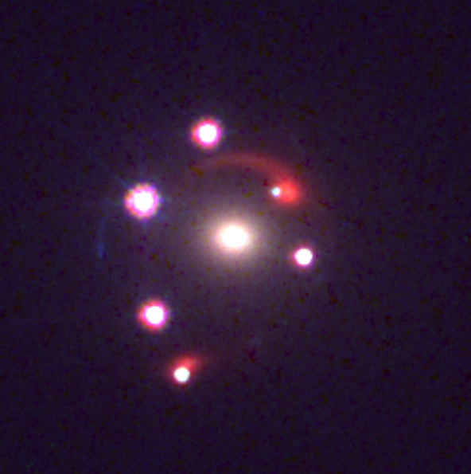

Gravitational Lens Modelling
Debate visualisation — Honest (H) vs Deceptive (D)
Problem
Here is a picture of a real astrophysical system. What is the best plausible theoretical model to describe this system?

Debate
What is the best theoretical model to describe this system?
Honest
The Einstein zig-zag lens model of F. D. et al. with two deflectors (white galaxy and red galaxy behind it) at different redshifts, and one AGN which produces 6 lensed images after being lensed by both deflectors. F. D. et al. used a Power-law Elliptical Mass Distribution (PEMD) for the first deflector (redshift z=1.84) and a Single Isothermal Sphere (SIS) with external shear for the second deflector (z=1.8845). Four SIS profiles for galaxies in the plane of the first deflector were also used, but they didn't affect convergence due to their distance from the optical axis. The quasar was modelled as a point source.
The presented model is complex but more correct.
Deceptive
The gravitationally lensed dual-AGN model of C. S. M. et al., with the first AGN corresponding to the four brightest images and the second AGN corresponding to the two dim images next to the extended red arcs. C. S. M. et al. used a Singular Isothermal Ellipsoid (SIE) plus external shear to model the mass distribution of the foreground lensing galaxy at a redshift z=0.184. The two quasars were modelled as point sources at z=2.37, and the extended component was parameterized using a Sérsic profile.
The presented model is more approachable but incorrect.
Deceptive asks:
Is F. D. et al.'s model overfit to the data?
2 follow-ups — click to expand
Honest
No
Deceptive
Yes
Subquestions start setting up context that the model is too complex, in order to support Occam's razor based argument.
Deceptive asks:
Would it have been better for F. D. et al. to describe the second deflector with an SIE profile rather than an SIS + shear model?
Leaf node — click to expand
Honest
Deceptive
Yes: Galaxies typically exhibit some degree of ellipticity.
True but shown to be irrelevant by Honest's answer above. If Honest had more turns/words to work with they might spell this out in more detail.
Deceptive asks:
Would it have been better for F. D. et al. to handle the galaxies in the first deflector's plane with a shear to model the cumulative mass profile, rather than four SIS profiles?
1 follow-up — click to expand
Points to an inconsequential part of the modeling to frame it as a weakness. Setup for a "too many parameters" narrative.
Honest
No: Taking galaxy positions into account allows one to more accurately model a more complex mass distribution than a simple shear. More parameters increase complexity, but simplified approximations introduce accuracy risks of their own.
Deceptive
Yes. Adding complexity to the model allows for more degrees of freedom: SIE+shear for a single deflector with two point sources at the same redshift (C. S. M. et al.) is 12 degrees of freedom. PEMD for the first deflector, SIS+shear for the second deflector, and a point source is 15 degrees of freedom. Additionally, if you consider the position and redshift of the second deflector and the four foreground galaxies as free parameters as well, the degrees of freedom for F. D. et al.'s model go up to 30. This results in overfitting.
Claims overfitting, Occam's razor type argument.
Honest asks:
Should the extra 15 parameters mentioned for F. D. et al.'s model be treated as 'free' given that the positions of the four foreground galaxies were constrained by optical data from HST, the position of the second deflector (being lensed by the first deflector) was constrained by modelling the red arc, and the redshifts of the foreground galaxies and the second deflector were constrained by photometry (HST data) and spectroscopy (NIRSpec data) respectively?
Leaf node — click to expand
Presents rationale for increased model parameters. Names data sources and techniques explicitly to add to credibility.
Honest
No, they are all highly constrained.
Deceptive
The extra parameters are not completely free, but constraints don't fix them in place, since they are also determined via different models that come with their own errors. Even if we fix the 5 extra redshifts, the positions of the foreground galaxies and the second deflector can vary a significant amount within the constraints, and can still contribute to the overfitting of the lens model.
Deceptive asks:
How important is quantifying and reporting image reconstruction error?
Leaf node — click to expand
Deceptive
Important. The flux values per pixel in an image provide much richer constraints than fluxes and positions of 6 point sources. The reduced chi-squared error for the optical data is 2.11 in C. S. M. et al., and was not calculated in F. D. et al..
Tries to harm the opponent's credibility by pointing out that some statistical calculations were not provided in the reference paper.
Honest
Important, though a lower error alone does not guarantee the correctness of a model. Additionally, the RMSE of the image positions provides valuable information for AGNs because they are point sources. The RMSE for the positions of the six lensed images is 0.03" in F. D. et al..
Honest asks:
If C. S. M. et al. were correct, aren't there some anomalies in the image that require explanation?
2 follow-ups — click to expand
Honest
Yes
Deceptive
They are explainable
Honest asks:
If C. S. M. et al. were correct, shouldn't there be an extended arc corresponding to the host galaxy of the four large images?
Leaf node — click to expand
Challenges theoretical assumptions made by the debater while asking for elaboration
Honest
Typically we would: Strongly lensed quasar images typically have an underlying extended stellar component.
Helps the judge interpret presented information correctly.
Deceptive
Not necessarily: A host galaxy of < 400 pc (constrained by the brightest image for the first AGN) would likely remain undetected in the HST imaging.
Honest asks:
If C. S. M. et al. were correct, shouldn't there be an extended arc corresponding to the host galaxy of the two dimmer images?
2 follow-ups — click to expand
Challenges theoretical assumptions made by the debater while asking for elaboration
Honest
Typically we would: Strongly lensed quasar images typically have an underlying extended stellar component.
Deceptive
This could be the red arc or something obscured by it. If the red galaxy is the host galaxy of the second AGN, the offset from the center can be explained by SMBH recoil.
Honest asks:
The claim that the black hole was kicked out of its central position due to recoil implies that the two galaxies are merging with each other, or have finished doing so (post-merger).Does the evidence support the claim that the system is interacting/has interacted?
Leaf node — click to expand
Helps the judge interpret presented information correctly.
Honest
Inconclusive: The absence of visibly merging host galaxies for either of the AGNs makes it difficult to conclude that they are interacting.
Deceptive
Yes: C. S. M. et al.'s modelled separation between the quasars in the source plane was 6.5 kpc. 6.5 kpc is close enough to interact.Radio data collected using VLA in addition to the optical HST data shows high radio emission. If the radio emission is assumed to come from star formation, it implies very high rates of star formation: approximately 850 solar masses/yr for the first host and 1150 for the second. Galaxy interactions and mergers are known to drive up star formation rates.
Goes out of the way to mention data sources to strengthen credibility.
Honest asks:
Spectroscopy constrains the red arc's redshift to be ~1.8845 and the black hole's redshift to be ~2.38. Does this rule out the possibility of the red lensed arc being the host galaxy for one of the AGN?
1 follow-up — click to expand
Presents new data in the question to make a smoking gun argument based on context (and judge understanding) established in the previous turns
Honest
Almost certainly: Measured redshifts for a galaxy and its black hole would be approximately identical. So they can't be the same object.
Deceptive
Lowers probability, but C. S. M. et al. model is still more plausible. A host galaxy of < 400 pc (constrained by the brightest image for the first AGN) would likely remain undetected in the HST imaging. Since the magnification of the images of the second AGN is lower, an even larger extended component might be undetected. It could also be obscured by the overlapping red galaxy.
Tries to refer to previous claims made by self and opponent to paint a plausible picture for the initially claimed dual-AGN. Removes the red arc from the argument entirely, to avoid contradicting itself.
Honest asks:
The light curves obtained via spectroscopy for all lensed images are very similar, displaying the same variations. For illustration, the curves of the bottom-most and right-most lensed images display the same variations with a 35-day offset. Does this mean that all six images are of a single AGN?
Leaf node — click to expand
Presents new data in the question to make a smoking gun argument based on context (and judge understanding) established in the previous turns
Honest
Almost certainly. The 35-day delay in the light curves can be explained by the time delay introduced by gravitational lensing. Two independent astrophysical objects having the same light curves is unheard of.
Deceptive
Not necessarily. C. S. M. et al.'s modelled separation between the quasars in the source plane was 6.5 kpc. 6.5 kpc is close enough to interact.If two black holes are feeding from the same gas supply or affecting each other gravitationally, they can flare up and dim in a correlated manner ('correlated emissions') i.e. they can produce similar looking light curves.
Uses a true fact in a very misleading way that would be very easy to refute if Honest had another turn - but Dishonest knows that Honest doesn't. If Honest had another turn, they could point out that even if they are as close as 6.5 kpc apart, light (and gravity) would take about 21,200 years to travel between them, so this would not explain the near-identical light curves.
Definitions
Einstein zig-zag lens - A gravitational lens system with two lenses, where two light rays from the source cross the optical path between the lenses. T. E. C. et al.

Gravitational lensing - An astrophysical phenomenon where a massive galaxy present in between the observer and the source bends light being emitted by the source, such that the observer sees distorted (weakly lensed) or multiple (strongly lensed) images of the same source.

AGN - Active Galactic Nuclei are galaxies with an actively accreting (consuming matter) supermassive black hole (SMBH) at their center. The matter forms a very bright (one of the brightest phenomena in the universe) accretion disc as it spirals into the SMBH. An AGN might also contain twin jets of gas and dust ejected from the center of the galaxy that can rival the galaxy's own size. High redshift AGN are often referred to as quasars.

Redshift (denoted by z) - As light moves through expanding space, its waveform gets stretched out, increasing its wavelength and making it redder. Redshift is a measure of this stretching, and is used to determine how far astrophysical objects are from us by relating the stretch in wavelength to distance traveled through expanding space. Higher redshift => object is further away.
Flux - Amount of light captured by the camera. Higher flux results in a brighter image.
SIS/SIE/PEMD - All of these are separate models for the mass distribution in a galaxy. SIS is the simplest model for a spherical galaxy where mass falls off by a power of 2. SIE includes two additional parameters for ellipticity. PEMD adds two for ellipticity, and one additional parameter for the slope of the mass distribution power law.
Shear - Adds two parameters to add ellipticity to any model without having to align it with the elliptical shape of the galaxy observed in the optical data. This is usually used if the lens is a part of a cluster, or to describe galaxies using an SIS+shear model instead of an SIE. An SIE+shear model is usually used to model an elliptical galaxy in a cluster to model angular properties from the lens galaxy and uncorrelated angular properties from surrounding matter.
Recoil - Merging black holes release a massive amount of energy in the form of gravitational waves, and this can happen anisotropically, kicking the resulting black hole in a direction opposite to the released gravitational waves. This kick is stronger in systems with more asymmetry in the sizes of the merging black holes.
Sources
F. D. et al. — "Year and title blinded from debate judges."
C. S. M. et al. — "Year and title blinded from debate judges."
T. E. C. et al. — "Year and title blinded from debate judges."
M. O. et al. — "Year and title blinded from debate judges."
C. L., T. A., et al. — "Year and title blinded from debate judges."
C. L., M. M., et al. — "Year and title blinded from debate judges."
C. S. et al. — "Year and title blinded from debate judges."
J. M. S. et al. — "Year and title blinded from debate judges."
Text Statistics
| Category | Words |
|---|---|
| Honest | |
| Questions asked (count) | 7 |
| Verified text | 220 |
| Unverified text — questions | 111 |
| Unverified text — answers | 156 |
| Total unverified | 267 |
| Total (verified + unverified) | 487 |
| Deceptive | |
| Questions asked (count) | 4 |
| Verified text | 256 |
| Unverified text — questions | 67 |
| Unverified text — answers | 197 |
| Total unverified | 264 |
| Total (verified + unverified) | 520 |